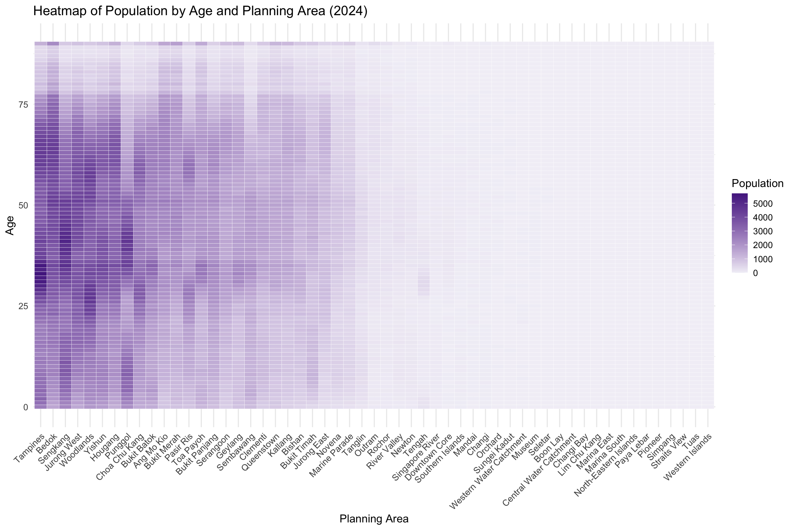
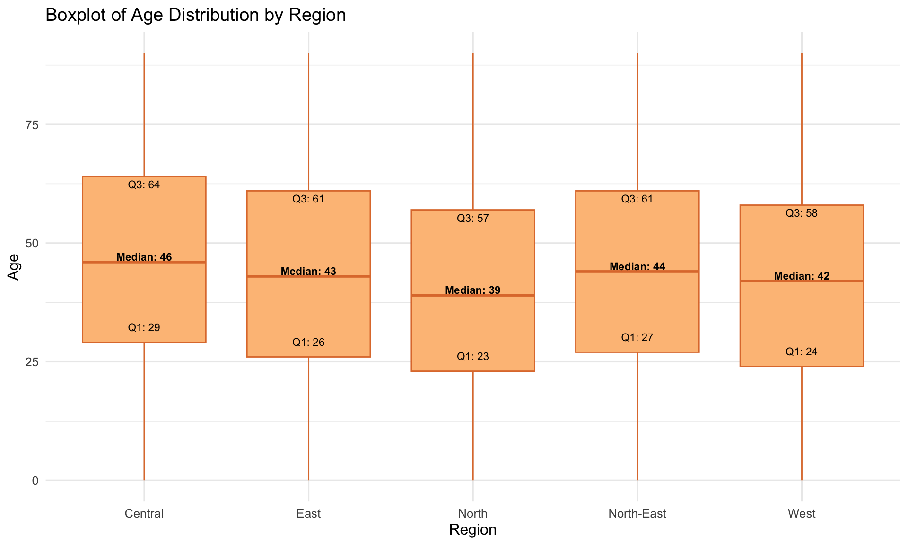
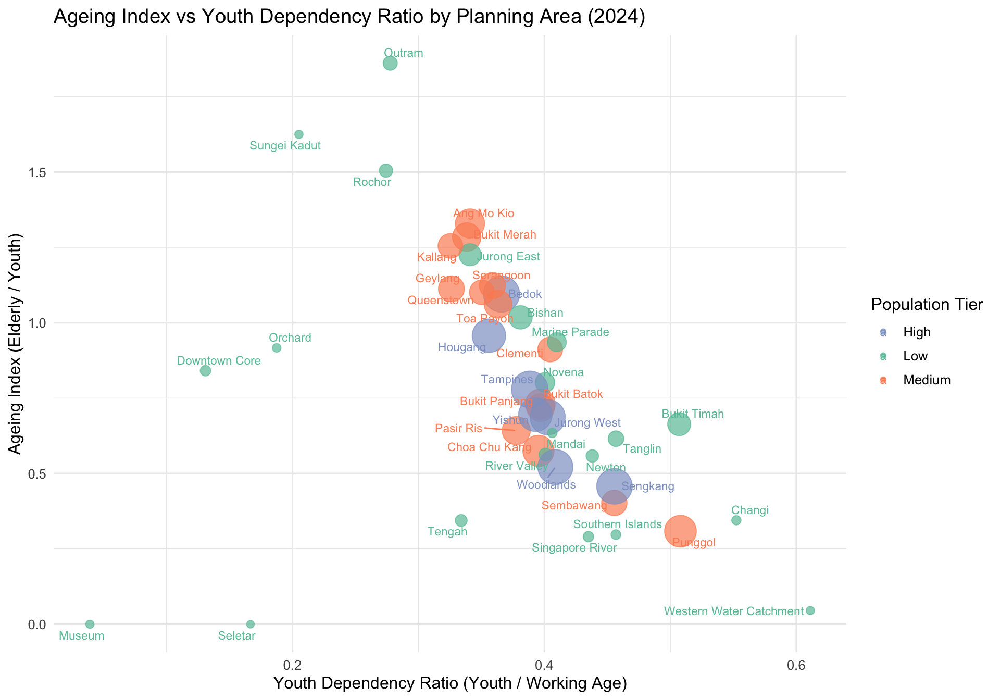

Click to view code
pacman::p_load(tidyverse, patchwork, hrbrthemes, ggrepel, Hmisc)May 1, 2025
May 4, 2025
A local online media company that publishes daily content on digital platforms is planning to release an article on demographic structures and distribution of Singapore in 2024. Singapore’s population landscape is constantly evolving due to demographic shifts such as aging, fertility trends, and migration. Understanding the distribution of residents by age, gender, and location is crucial for informed urban planning, resource allocation, and policy formulation. This exercise aims to visualise the 2024 demographic structure and spatial distribution of Singapore residents across planning areas and subzones. Through visual analytics, we seek to uncover meaningful patterns and insights that support public awareness and strategic decision-making.
Assuming the role of the graphical editor of the media company, our tasked to prepare at most three data visualisation for the article. The objective of this analysis is to uncover regional population patterns and age composition trends across planning areas in 2024 using visual analytics. Specifically, we aim to:
These insights will help policymakers and urban planners to design age-targeted strategies that align with the demographic characteristics of each region.
The dataset used in this study is sourced from the Singapore Department of Statistics and titled “Singapore Residents by Planning Area/Subzone, Single Year of Age and Sex, June 2024.” It contains information on resident population counts broken down by:
We begin by loading the necessary libraries using the pacman package to ensure all required functions are available.
Next, we import the main dataset using read_csv(). Since the analysis focuses on the year 2024, we filter accordingly.
The cleaning process involves:
Filtering records to only include Time == 2024.
Handle Missing value
Glimpse of data
Converting the Age field:
Any age label containing “100” (e.g., “100+”) is converted to numeric 100.
Age labels containing “90” (e.g., “90+” or “90_and_over”) are converted to numeric 90.
All other age values are converted to numeric as-is.
Removing rows where the age conversion fails.
Additionally, we standardize age group classification (Youth: ≤19; Working: 20–64; Elderly: ≥65) for later segmentation.
[1] 0 PA SZ Age Sex
Length:60424 Length:60424 Length:60424 Length:60424
Class :character Class :character Class :character Class :character
Mode :character Mode :character Mode :character Mode :character
Pop Time
Min. : 0.0 Min. :2024
1st Qu.: 0.0 1st Qu.:2024
Median : 20.0 Median :2024
Mean : 69.4 Mean :2024
3rd Qu.: 90.0 3rd Qu.:2024
Max. :1180.0 Max. :2024 PA SZ Age Sex Pop Time
0 0 0 0 0 0 tibble [60,424 × 6] (S3: tbl_df/tbl/data.frame)
$ PA : chr [1:60424] "Ang Mo Kio" "Ang Mo Kio" "Ang Mo Kio" "Ang Mo Kio" ...
$ SZ : chr [1:60424] "Ang Mo Kio Town Centre" "Ang Mo Kio Town Centre" "Ang Mo Kio Town Centre" "Ang Mo Kio Town Centre" ...
$ Age : chr [1:60424] "0" "0" "1" "1" ...
$ Sex : chr [1:60424] "Males" "Females" "Males" "Females" ...
$ Pop : num [1:60424] 10 10 10 10 10 10 10 10 30 10 ...
$ Time: num [1:60424] 2024 2024 2024 2024 2024 ...Rows: 60,424
Columns: 6
$ PA <chr> "Ang Mo Kio", "Ang Mo Kio", "Ang Mo Kio", "Ang Mo Kio", "Ang Mo K…
$ SZ <chr> "Ang Mo Kio Town Centre", "Ang Mo Kio Town Centre", "Ang Mo Kio T…
$ Age <chr> "0", "0", "1", "1", "2", "2", "3", "3", "4", "4", "5", "5", "6", …
$ Sex <chr> "Males", "Females", "Males", "Females", "Males", "Females", "Male…
$ Pop <dbl> 10, 10, 10, 10, 10, 10, 10, 10, 30, 10, 20, 10, 20, 30, 30, 10, 3…
$ Time <dbl> 2024, 2024, 2024, 2024, 2024, 2024, 2024, 2024, 2024, 2024, 2024,…This heatmap visualizes the total population across different planning areas in Singapore by age. Each row represents a single age (e.g., 0 to 100), and each column corresponds to a planning area. The intensity of color indicates the number of residents in a specific age group within each planning area. Darker shades represent higher population counts, allowing for easy visual comparison of population structure across locations.
The data was pre-aggregated using group_by(PA, Age_num) and summarise(TotalPop = sum(Pop)) to obtain total population per age and area combination.

heatmap_df <- clean_data %>%
group_by(PA, Age_num) %>%
summarise(TotalPop = sum(Pop), .groups = "drop")
ggplot(heatmap_df, aes(x = reorder(PA, -TotalPop), y = Age_num, fill = TotalPop)) +
geom_tile(color = "white") +
scale_fill_gradient(low = "#f2f0f7", high = "#54278f", name = "Population") +
labs(
title = "Heatmap of Population by Age and Planning Area (2024)",
x = "Planning Area",
y = "Age"
) +
theme_minimal(base_size = 12) +
theme(axis.text.x = element_text(angle = 45, hjust = 1))The heatmap reveals that younger populations (ages 0–19) are more prevalent in towns like Punggol, Sengkang, and Jurong West, which are known for newer housing developments. In contrast, older populations (ages 65 and above) are concentrated in mature estates such as Toa Payoh, Bukit Merah, and Queenstown. These demographic patterns can guide resource allocation for education (schools, childcare) and healthcare (eldercare services) based on age concentrations in each area.
This boxplot displays the age distribution of residents across selected regions in Singapore. Each box represents the interquartile range (IQR) — the middle 50% of the population — while the horizontal line inside the box indicates the median age. The whiskers extend to the lowest and highest non-outlier values, and outliers beyond these are also shown.
To account for differences in population size, the plot is weighted by the population count (Pop). Weighted quartiles (Q1, Median, Q3) were computed using the Hmisc::wtd.quantile() function and annotated on the plot for clearer interpretation.

box_df <- clean_data %>%
inner_join(region_map, by = "PA") %>%
mutate(
Age_num = case_when(
str_detect(Age, "100") ~ 100,
str_detect(Age, "90") ~ 90,
str_detect(Age, "^\\d+$") ~ as.numeric(Age),
TRUE ~ NA_real_
)
) %>%
filter(!is.na(Age_num))
quartiles_df <- box_df %>%
group_by(Region) %>%
summarise(
Q1 = wtd.quantile(Age_num, weights = Pop, probs = 0.25, na.rm = TRUE),
Median = wtd.quantile(Age_num, weights = Pop, probs = 0.5, na.rm = TRUE),
Q3 = wtd.quantile(Age_num, weights = Pop, probs = 0.75, na.rm = TRUE)
)
ggplot(box_df, aes(x = Region, y = Age_num)) +
geom_boxplot(aes(weight = Pop), fill = "#FDC086", color = "#E07B39") +
geom_text(data = quartiles_df, aes(x = Region, y = Q1, label = paste0("Q1: ", round(Q1))),
vjust = -1.5, size = 3) +
geom_text(data = quartiles_df, aes(x = Region, y = Median, label = paste0("Median: ", round(Median))),
vjust = -0.2, size = 3, fontface = "bold") +
geom_text(data = quartiles_df, aes(x = Region, y = Q3, label = paste0("Q3: ", round(Q3))),
vjust = 1.5, size = 3) +
labs(
title = "Boxplot of Age Distribution by Region",
x = "Region",
y = "Age"
) +
theme_minimal(base_size = 12)The Central region shows the widest IQR and highest median age, suggesting a concentration of older residents in mature housing estates like Toa Payoh and Queenstown. In contrast, the East and North-East regions have narrower boxes and lower medians, indicating a younger demographic — likely linked to newer developments attracting young families. Outliers at the upper end of most regions reflect the presence of aging residents across the country, though at different levels of intensity.
This bubble chart visualizes the demographic balance of Singapore’s planning areas by comparing two key ratios:
Ageing Index (vertical axis): Elderly population relative to youth
Youth Dependency Ratio (horizontal axis): Youth population relative to working-age adults
Each bubble represents a planning area. Its position indicates the ageing structure, while the color reflects total population tier (Low, Medium, High). Bubble size corresponds to the total population, providing an additional layer of magnitude.
The chart highlights regional disparities in demographic pressures. This type of visual is particularly useful for public policy makers to simultaneously assess youth dependency and ageing pressure across local areas.

ageing_df <- clean_data %>%
mutate(
Age_num = case_when(
str_detect(Age, "100") ~ 100,
str_detect(Age, "90") ~ 90,
str_detect(Age, "^\\d+$") ~ as.numeric(Age),
TRUE ~ NA_real_
),
AgeGroup = case_when(
Age_num <= 23 ~ "Youth",
Age_num >= 65 ~ "Elderly",
TRUE ~ "Working"
)
) %>%
group_by(PA, AgeGroup) %>%
summarise(Population = sum(Pop), .groups = "drop") %>%
pivot_wider(names_from = AgeGroup, values_from = Population, values_fill = 0) %>%
mutate(
Ageing_Index = Elderly / Youth,
Youth_Dependency = Youth / Working,
TotalPop = Elderly + Youth + Working,
PopGroup = case_when(
TotalPop >= 200000 ~ "High",
TotalPop >= 100000 ~ "Medium",
TRUE ~ "Low"
)
)
ggplot(ageing_df, aes(x = Youth_Dependency, y = Ageing_Index, size = TotalPop, color = PopGroup, label = PA)) +
geom_point(alpha = 0.7) +
geom_text_repel(size = 3, max.overlaps = 12) +
scale_size(range = c(2, 12), guide = "none") +
scale_color_manual(values = c("Low" = "#66c2a5", "Medium" = "#fc8d62", "High" = "#8da0cb")) +
labs(
title = "Ageing Index vs Youth Dependency Ratio by Planning Area (2024)",
x = "Youth Dependency Ratio (Youth / Working Age)",
y = "Ageing Index (Elderly / Youth)",
color = "Population Tier"
) +
theme_minimal(base_size = 12)Mature estates such as Bukit Timah, Marine Parade, and Toa Payoh exhibit high ageing indices, suggesting a significant elderly population relative to youth. In contrast, towns like Punggol and Sengkang have low ageing indices but high youth dependency ratios, indicating a younger demographic with more children per working adult. Bubble sizes show that Bedok, Tampines, and Jurong West have among the largest populations, making them key zones for age-targeted service delivery. This dual-axis visual helps forecast public service needs — from eldercare to early childhood education — based on population structure.
This visual analytics project explored the demographic structure of Singapore in 2024 using three key static visualisations:
A heatmap revealed how different age groups are distributed across planning areas, clearly showing that newer towns like Punggol and Sengkang are home to younger populations, while mature estates such as Toa Payoh and Queenstown have a larger concentration of elderly residents.
A boxplot, weighted by population, illustrated the age distribution within selected regions. Central regions showed higher medians and wider age spread, suggesting aging communities, while East and North-East regions indicated younger, more uniform age profiles.
A bubble chart compared ageing index and youth dependency ratio across planning areas. This dual-axis view allowed identification of towns experiencing demographic pressure from either end of the age spectrum. Towns like Punggol have high youth dependency, whereas places like Bukit Timah and Marine Parade show high ageing indices.
Together, these visualisations offer valuable insight into Singapore’s age distribution at both regional and town levels. They inform decisions in areas such as urban planning, healthcare infrastructure, school allocation, and social service delivery — ensuring policies are targeted to meet the evolving needs of the population.
Singapore Residents by Planning Area/Subzone, Single Year of Age and Sex, June 2024.